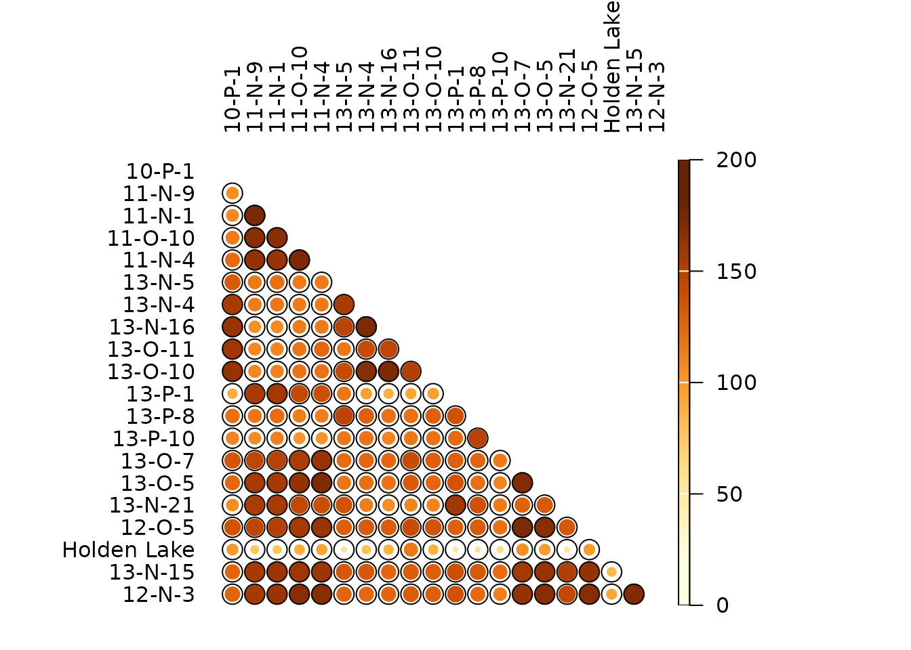
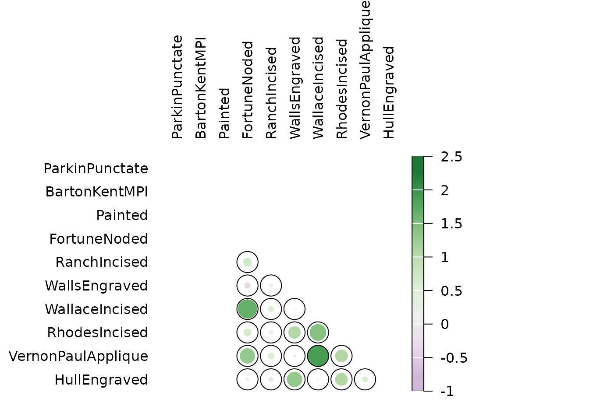

\(\beta\)-diversity measures how different local systems are from one another (Moreno and Rodríguez 2010).
## Install extra packages (if needed)
# install.packages("folio") # Datasets
## Load packages
library(tabula)
## Ceramic data from Lipo et al. 2015
data("mississippi", package = "folio")Turnover
The following methods can be used to ascertain the degree of turnover in taxa composition along a gradient on qualitative (presence/absence) data. This assumes that the order of the matrix rows (from 1 to \(m\)) follows the progression along the gradient/transect.
We denote the \(m \times p\) incidence matrix by \(X = \left[ x_{ij} \right] ~\forall i \in \left[ 1,m \right], j \in \left[ 1,p \right]\) and the \(p \times p\) corresponding co-occurrence matrix by \(Y = \left[ y_{ij} \right] ~\forall i,j \in \left[ 1,p \right]\), with row and column sums:
\[\begin{align} x_{i \cdot} = \sum_{j = 1}^{p} x_{ij} && x_{\cdot j} = \sum_{i = 1}^{m} x_{ij} && x_{\cdot \cdot} = \sum_{j = 1}^{p} \sum_{i = 1}^{m} x_{ij} && \forall x_{ij} \in \lbrace 0,1 \rbrace \\ y_{i \cdot} = \sum_{j \geqslant i}^{p} y_{ij} && y_{\cdot j} = \sum_{i \leqslant j}^{p} y_{ij} && y_{\cdot \cdot} = \sum_{i = 1}^{p} \sum_{j \geqslant i}^{p} y_{ij} && \forall y_{ij} \in \lbrace 0,1 \rbrace \end{align}\]
| Measure | Reference |
|---|---|
| \[ \beta_W = \frac{S}{\alpha} - 1 \] | Whittaker (1960) |
| \[ \beta_C = \frac{g(H) + l(H)}{2} - 1 \] | Cody (1975) |
| \[ \beta_R = \frac{S^2}{2 y_{\cdot \cdot} + S} - 1 \] | Routledge (1977) |
| \[ \beta_I = \log x_{\cdot \cdot} - \frac{\sum_{j = 1}^{p} x_{\cdot j} \log x_{\cdot j}}{x_{\cdot \cdot}} - \frac{\sum_{i = 1}^{m} x_{i \cdot} \log x_{i \cdot}}{x_{\cdot \cdot}} \] | Routledge (1977) |
| \[ \beta_E = \exp(\beta_I) - 1 \] | Routledge (1977) |
| \[ \beta_T = \frac{g(H) + l(H)}{2\alpha} \] | Wilson & Shmida (1984) |
Where:
- \(\alpha\) is the mean sample diversity: \(\alpha = \frac{x_{\cdot \cdot}}{m}\),
- \(g(H)\) is the number of taxa gained along the transect,
- \(l(H)\) is the number of taxa lost along the transect.
Similarity
Similarity between two samples \(a\) and \(b\) or between two types \(x\) and \(y\) can be measured as follow.
These indices provide a scale of similarity from \(0\)-\(1\) where \(1\) is perfect similarity and \(0\) is no similarity, with the exception of the Brainerd-Robinson index which is scaled between \(0\) and \(200\).
| Measure | Reference |
|---|---|
| \[ C_J = \frac{o_j}{S_a + S_b - o_j} \] | Jaccard |
| \[ C_S = \frac{2 \times o_j}{S_a + S_b} \] | Sorenson |
| Measure | Reference |
|---|---|
| \[ C_{BR} = 200 - \sum_{j = 1}^{S} \left| \frac{a_j \times 100}{\sum_{j = 1}^{S} a_j} - \frac{b_j \times 100}{\sum_{j = 1}^{S} b_j} \right|\] | Brainerd (1951), Robinson (1951) |
| \[ C_N = \frac{2 \sum_{j = 1}^{S} \min(a_j, b_j)}{N_a + N_b} \] | Bray & Curtis (1957), Sorenson |
| \[ C_{MH} = \frac{2 \sum_{j = 1}^{S} a_j \times b_j}{(\frac{\sum_{j = 1}^{S} a_j^2}{N_a^2} + \frac{\sum_{j = 1}^{S} b_j^2}{N_b^2}) \times N_a \times N_b} \] | Morisita-Horn |
| Measure | Reference |
|---|---|
| \[ C_{Bi} = \frac{o_i - N \times p}{\sqrt{N \times p \times (1 - p)}} \] | Kintigh (2006) |
Where:
- \(S_a\) and \(S_b\) denote the total number of taxa observed in samples \(a\) and \(b\), respectively,
- \(N_a\) and \(N_b\) denote the total number of individuals in samples \(a\) and \(b\), respectively,
- \(a_j\) and \(b_j\) denote the number of individuals in the \(j\)-th type/taxon, \(j \in \left[ 1,S \right]\),
- \(x_i\) and \(y_i\) denote the number of individuals in the \(i\)-th sample/case, \(i \in \left[ 1,m \right]\),
- \(o_i\) denotes the number of sample/case common to both type/taxon: \(o_i = \sum_{k = 1}^{m} x_k \cap y_k\),
- \(o_j\) denotes the number of type/taxon common to both sample/case: \(o_j = \sum_{k = 1}^{S} a_k \cap b_k\).
## Brainerd-Robinson (similarity between assemblages)
BR <- similarity(mississippi, method = "brainerd")
plot_spot(BR, col = khroma::colour("YlOrBr")(12))
## Binomial co-occurrence (similarity between types)
BI <- similarity(mississippi, method = "binomial")
plot_spot(BI, col = khroma::colour("PRGn")(12))
References
Brainerd, G. W. 1951. The Place of Chronological Ordering in Archaeological Analysis. American Antiquity, 16(4), 301-313. DOI: 10.2307/276979.
Bray, J. R. & Curtis, J. T. (1957). An Ordination of the Upland Forest Communities of Southern Wisconsin. Ecological Monographs, 27(4), 325-349. DOI: 10.2307/1942268.
Cody, M. L. (1975). Towards a Theory of Continental Species Diversity: Bird Distributions Over Mediterranean Habitat Gradients. In M. L. Cody & J. M. Diamond (Eds.), Ecology and Evolution of Communities, 214-257. Cambridge, MA: Harvard University Press.
Kintigh, K. (2006). Ceramic Dating and Type Associations. In J. Hantman & R. Most (Eds.), Managing Archaeological Data: Essays in Honor of Sylvia W. Gaines, 17–26. Anthropological Research Paper 57. Tempe, AZ: Arizona State University. DOI: 10.6067/XCV8J38QSS.
Moreno, C. E. & Rodríguez, P. (2010). A Consistent Terminology for Quantifying Species Diversity? Oecologia, 163(2), 279-782. DOI: 10.1007/s00442-010-1591-7.
Robinson, W. S. (1951). A Method for Chronologically Ordering Archaeological Deposits. American Antiquity, 16(4), 293-301. DOI: 10.2307/276978.
Routledge, R. D. (1977). On Whittaker’s Components of Diversity. Ecology, 58(5), 1120-1127. DOI: 10.2307/1936932.
Whittaker, R. H. (1960). Vegetation of the Siskiyou Mountains, Oregon and California. Ecological Monographs, 30(3), 279-338. DOI: 10.2307/1943563..
Wilson, M. V. & Shmida, A. (1984). Measuring Beta Diversity with Presence-Absence Data. The Journal of Ecology, 72(3), 1055-1064. DOI: 10.2307/2259551.